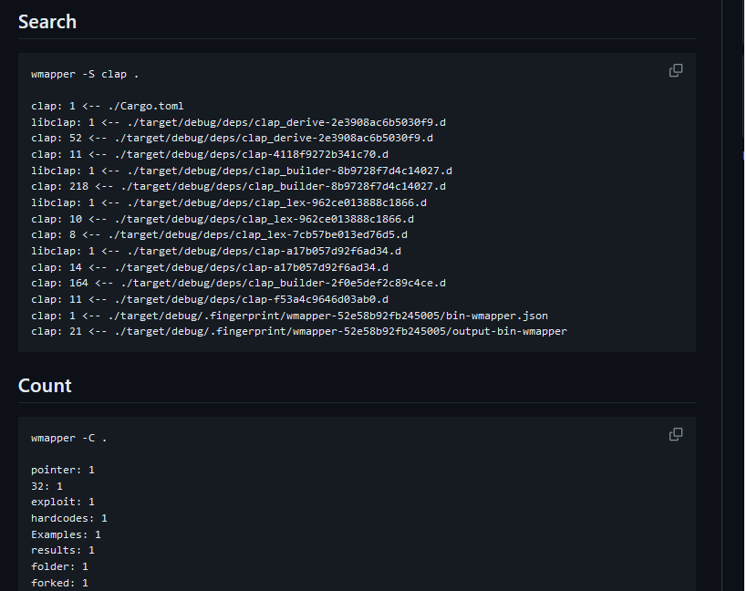
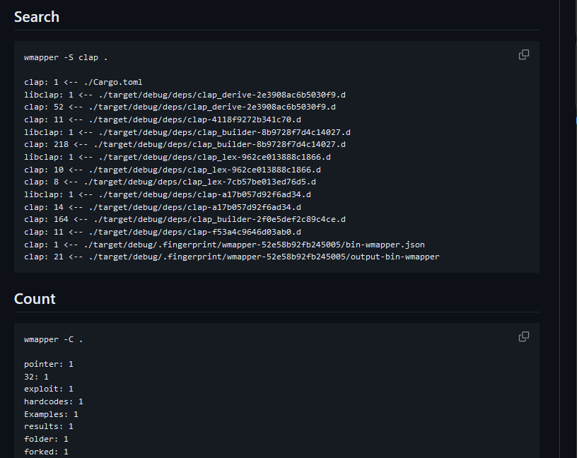

RustWord Mapper
Word analyzer CLI
Word analyzer CLI
Created a command line interface in Rust that analyzes and tokenizes text content in either a single file or recursively in a directory. The program counts all words and displays their percentage per document.
With a focus on flexibility, the CLI offers various options. It can showcase overall data on word occurrence percentages or provide detailed information on each word per document. This functionality aids in gaining insights into the distribution of words across files in a directory or within a single file.
Designed for efficiency and versatility, the Rust-based command line interface provides a powerful tool for users to analyze textual data and gain valuable insights.